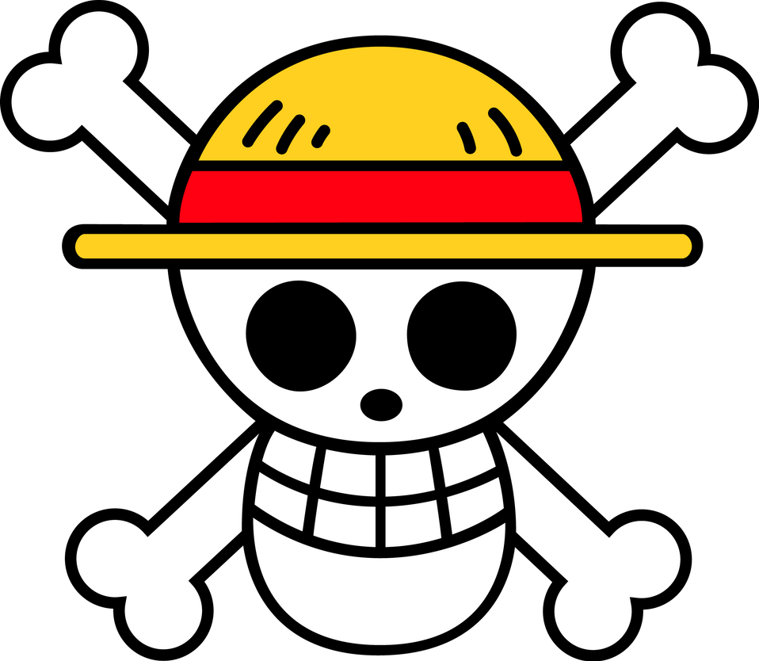
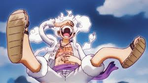

About 
What is One piece ?
One Piece is the name the world gave to all the treasure gained by the Pirate King Gol D. Roger. At least a portion of it once belonged to Joy Boy during the Void Century. The treasure is said to be of unimaginable value, and is currently located on the final island of the Grand Line: Laugh Tale. The One Piece is the driving goal of Monkey D. Luffy and his crew, as well as that of multiple other pirates, who all seek to claim the treasure in order to become the next Pirate King, following Roger's dying words at his execution.The Greatest Teasure :
 At some point during the Void Century, a man named Joy Boy came across an island located at the end of the Grand Line. Here, he left behind a treasure of unimaginable value. Stories of this treasure on the final island piqued the interest of Gol D. Roger, and he took the World Government forbidding exploration of the island as evidence of it being real.
Only the members of the Roger Pirates crew that journeyed to the island learned what exactly the treasure consists of. Upon arriving on the island and seeing Joy Boy's treasure, the Roger Pirates simply began to laugh. Roger described it as a "tale full of laughs", which gave him the idea to name the final island "Laugh Tale". Sometime after the Roger Pirates' discovery, the world at large would begin to refer to Roger's treasures as the "One Piece".
Before Roger was executed, he announced to the world that this great treasure could be claimed by anyone who could reach it, thereby starting the Great Age of Pirates.
The closest the Straw Hat Pirates have ever come to finding out the nature of the One Piece was during the Sabaody Archipelago Arc, when Usopp tried to ask Silvers Rayleigh about it. However, Luffy stopped him on the grounds that learning about it from someone else would defeat the purpose of their adventures and that becoming the Pirate King would have little merit if he already knew anything about the One Piece.
After decades of speculations and doubts, the treasure's existence was confirmed by Whitebeard with his last breath. He mentioned that "a grand battle will engulf the entire world" and "the world will be shaken to its core" when the One Piece is found.
During the Wano Country Arc, Big Mom had an internal monologue expressing the idea that "some of" the One Piece might be located in Wano Country rather than Laugh Tale. This has yet to be elaborated on further.
At some point during the Void Century, a man named Joy Boy came across an island located at the end of the Grand Line. Here, he left behind a treasure of unimaginable value. Stories of this treasure on the final island piqued the interest of Gol D. Roger, and he took the World Government forbidding exploration of the island as evidence of it being real.
Only the members of the Roger Pirates crew that journeyed to the island learned what exactly the treasure consists of. Upon arriving on the island and seeing Joy Boy's treasure, the Roger Pirates simply began to laugh. Roger described it as a "tale full of laughs", which gave him the idea to name the final island "Laugh Tale". Sometime after the Roger Pirates' discovery, the world at large would begin to refer to Roger's treasures as the "One Piece".
Before Roger was executed, he announced to the world that this great treasure could be claimed by anyone who could reach it, thereby starting the Great Age of Pirates.
The closest the Straw Hat Pirates have ever come to finding out the nature of the One Piece was during the Sabaody Archipelago Arc, when Usopp tried to ask Silvers Rayleigh about it. However, Luffy stopped him on the grounds that learning about it from someone else would defeat the purpose of their adventures and that becoming the Pirate King would have little merit if he already knew anything about the One Piece.
After decades of speculations and doubts, the treasure's existence was confirmed by Whitebeard with his last breath. He mentioned that "a grand battle will engulf the entire world" and "the world will be shaken to its core" when the One Piece is found.
During the Wano Country Arc, Big Mom had an internal monologue expressing the idea that "some of" the One Piece might be located in Wano Country rather than Laugh Tale. This has yet to be elaborated on further.
Who is Gol D. Roger ?
 Gol D. Roger, more commonly known as Gold Roger, was a legendary pirate who, as captain of the Roger Pirates, held the title of Pirate King and owned the legendary treasure known as One Piece. He was also the lover of Portgas D. Rouge and the biological father of Portgas D. Ace.
Roger was famed as the man who did what no one thought possible — he conquered the Grand Line and amassed a vast fortune. Afterwards, knowing that he would soon die from an incurable disease, Roger disbanded his crew before turning himself in to be executed. The World Government intended to have Roger be publicly executed to discourage piracy, but his last words had the opposite impact. He stated that anyone who can find his treasure can claim it. As such, this made Roger single-handedly responsible for starting the Golden Age of Pirates.
Gol D. Roger, more commonly known as Gold Roger, was a legendary pirate who, as captain of the Roger Pirates, held the title of Pirate King and owned the legendary treasure known as One Piece. He was also the lover of Portgas D. Rouge and the biological father of Portgas D. Ace.
Roger was famed as the man who did what no one thought possible — he conquered the Grand Line and amassed a vast fortune. Afterwards, knowing that he would soon die from an incurable disease, Roger disbanded his crew before turning himself in to be executed. The World Government intended to have Roger be publicly executed to discourage piracy, but his last words had the opposite impact. He stated that anyone who can find his treasure can claim it. As such, this made Roger single-handedly responsible for starting the Golden Age of Pirates.
Who is Monkey D Luffy ?
 Monkey D. Luffy, also known as "Straw Hat Luffy" and commonly as "Straw Hat", is the founder and captain of the increasingly infamous and powerful Straw Hat Pirates, as well as the most powerful of its top fighters. He desires to find the legendary treasure left behind by the late Gol D. Roger and thereby become the Pirate King, which would help facilitate an unknown dream of his that he has told only to Shanks, his brothers, and crew. He believes that being the Pirate King means having the most freedom in the world. Born in Foosha Village, Luffy is the son of Monkey D. Dragon, the leader of the Revolutionary Army, and the grandson of the Marine hero Monkey D. Garp.Straw Hat Pirate
 The "Straw Hats" are named after Luffy's signature hat that was given to him by "Red-Haired" Shanks and are first referred to as the Straw Hat Pirates by Smoker in the Arabasta Kingdom. The crew sailed on the Going Merry, their first official Straw Hat ship, up until the Water 7 Arc. During the Post-Enies Lobby Arc, Franky and Iceburg built them a new ship which was named the Thousand Sunny by Iceburg, even though the members fought over different names.
The "Straw Hats" are named after Luffy's signature hat that was given to him by "Red-Haired" Shanks and are first referred to as the Straw Hat Pirates by Smoker in the Arabasta Kingdom. The crew sailed on the Going Merry, their first official Straw Hat ship, up until the Water 7 Arc. During the Post-Enies Lobby Arc, Franky and Iceburg built them a new ship which was named the Thousand Sunny by Iceburg, even though the members fought over different names.
Members of Straw Hat pirates
- Monkey D. Luffy
- Roronoa Zoro
- Nami
- Usopp
- Sanji
- Tony Tony Chopper
- Nico Robin
- Franky
- Brook
- Jinbe